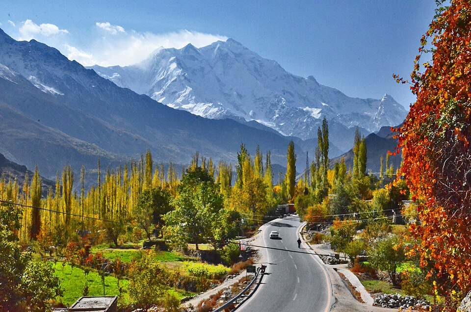

Gilgit-Baltistan
Hunza

Known for Attabad Lake, Altit and Baltit Forts, and scenic mountain views.
- Best time to visit: April to October
- Local food: Chapshuro, Hunza Walnut Cake
- Approx cost: PKR 20,000–40,000
Skardu

Famous for Deosai Plains, Shigar Fort, and cold desert landscapes.
- Best time to visit: May to September
- Local food: Buckwheat bread, Balay soup
- Approx cost: PKR 25,000–45,000
Fairy Meadows

Base camp of Nanga Parbat — ideal for trekkers and nature lovers.
- Best time to visit: June to September
- Local food: Simple mountain cuisine
- Approx cost: PKR 15,000–35,000
Khyber Pakhtunkhwa
Swat
Called the 'Switzerland of the East', home to Malam Jabba and Fizagat Park.
- Best time to visit: March to October
- Local food: Trout Fish, Chapli Kebab
- Approx cost: PKR 18,000–38,000
Kalam
Valley known for Ushu Forest, Mahodand Lake and beautiful scenery.
- Best time to visit: April to October
- Local food: BBQ, local pulao
- Approx cost: PKR 20,000–40,000
Naran & Kaghan

Home to Saif-ul-Malook, Lulusar Lake, and snow-covered peaks.
- Best time to visit: May to September
- Local food: Pakoras, Kashmiri tea
- Approx cost: PKR 22,000–42,000